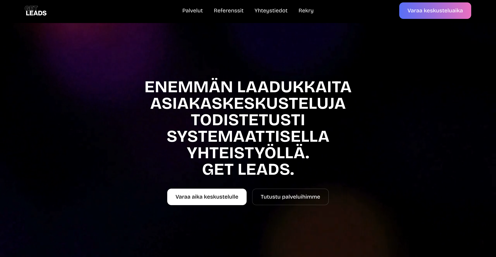
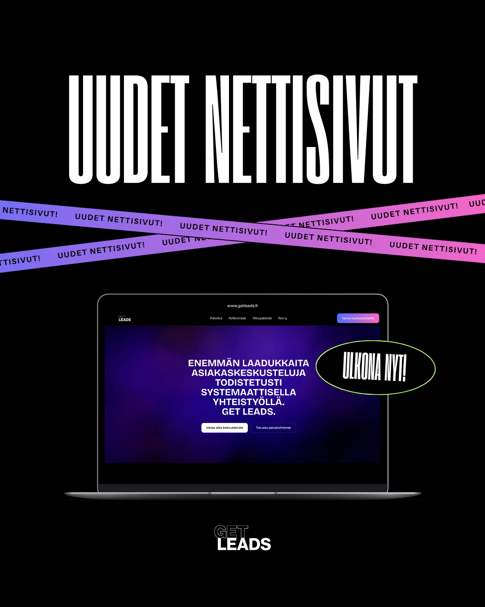
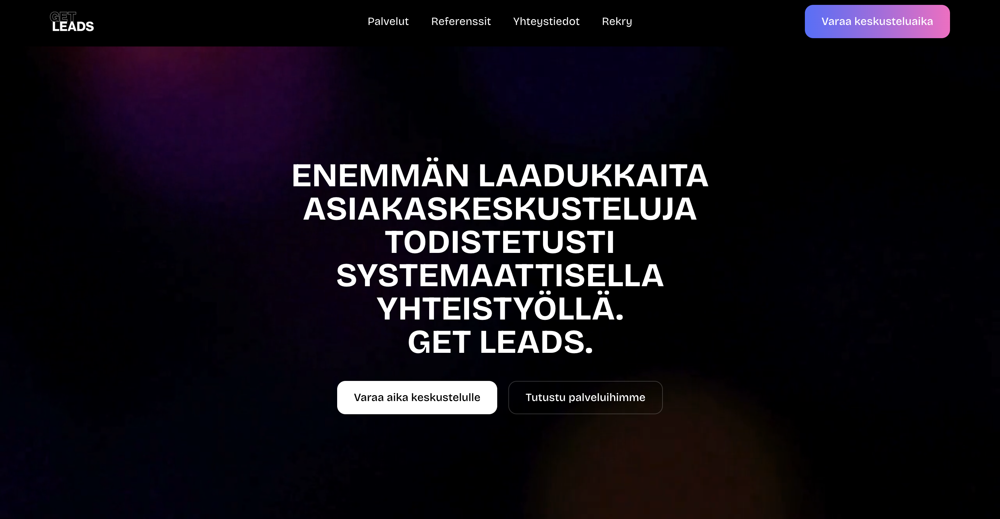
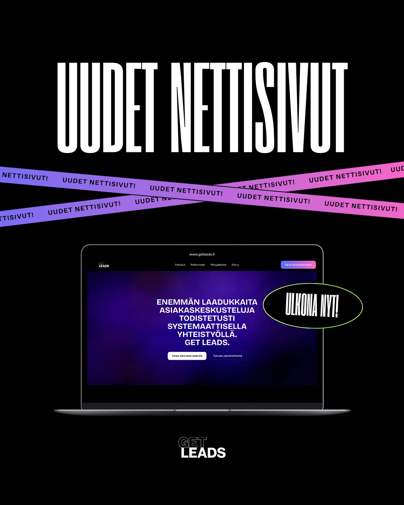

Työt
Nettisivut
Rakensin mobiiliresponsiivisen verkkosivuston. Tavoitteena oli selkeä rakenne ja nopea lataus.
Design
Tein visuaalisia materiaaleja markkinointiin. Työ sisälsi typografian valinnat ja sommittelun.

Rakensin mobiiliresponsiivisen verkkosivuston. Tavoitteena oli selkeä rakenne ja nopea lataus.
Tein visuaalisia materiaaleja markkinointiin. Työ sisälsi typografian valinnat ja sommittelun.
